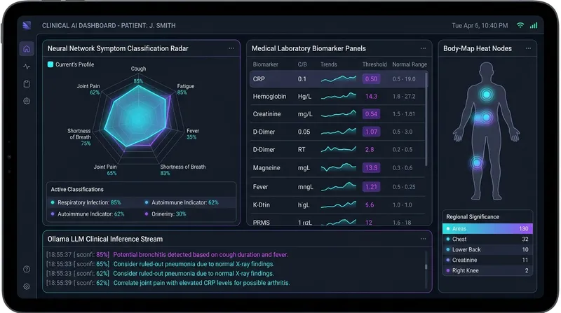

CareMind AI — Air-Gapped Clinical Support Platform
2026An offline clinical decision support system combining PyTorch multi-label disease classification with a local Ollama (Llama-3.1) reasoning model. Constrained by Pydantic JSON schemas to eradicate hallucinations. 5 microservices coordinated via Docker Compose with Prometheus telemetry.
docker-compose.yml
version: '3.8'
services:
caremind-api:
build: ./backend
ports: ["8000:8000"]
environment:
- OLLAMA_HOST=http://caremind-ollama:11434
- MODEL_PATH=/models/multilabel_classifier.pt
depends_on: [caremind-ollama]
caremind-ollama:
image: ollama/ollama:latest
volumes: [ollama_data:/root/.ollama]
ports: ["11434:11434"]
prometheus:
image: prom/prometheus:latest
volumes: [./monitoring/prometheus.yml:/etc/prometheus/prometheus.yml]
ports: ["9090:9090"]
grafana:
image: grafana/grafana:latest
ports: ["3000:3000"]
depends_on: [prometheus]
volumes:
ollama_data: